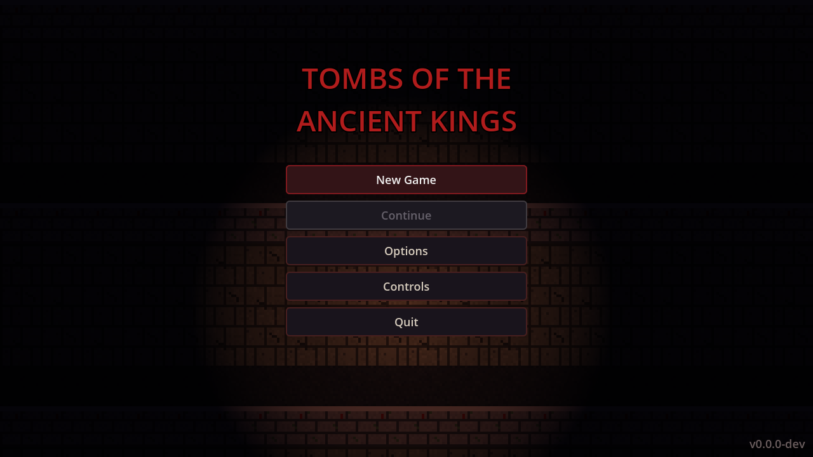
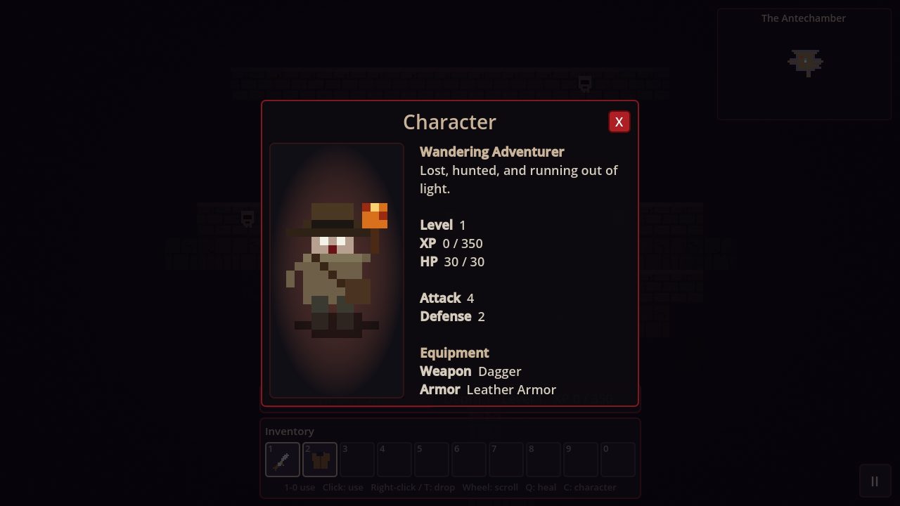

Torch and fog of war
You only see what your torch lights. The rest stays black until you walk into it.
Turn-based, procedurally generated, and quiet enough that you can hear yourself breathe.
You only see what your torch lights. The rest stays black until you walk into it.
Tile tint, ambient light and the names of the floors all sink as you descend.
Low health pulses the edges of the screen red and fills your ears with a heartbeat.
Stackable potions and scrolls on the number keys. Press Q to drink a health potion without looking.
Quick-save with F5. The game also saves after each move.
Two kinds of things want you dead. Everything else in the tomb wants to be picked up.
The full game runs right here in your browser. Keyboard required, about 10 MB to download.


Pick your platform. Each build is made automatically from the latest source.
The installers are not code-signed, so Windows and macOS will ask you to confirm the first launch. The install guide walks through it.